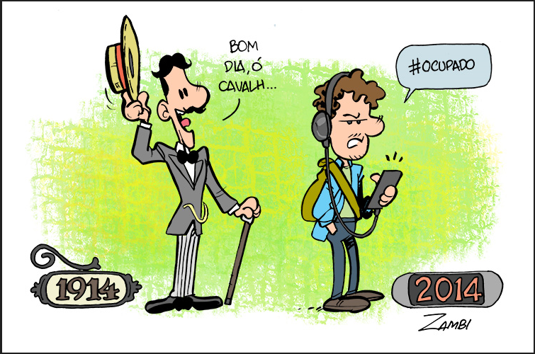

O processo civilizador, conceito central na obra do sociólogo Norbert Elias, refere-se à longa e gradual transformação das formas de comportamento humano, especialmente no que diz respeito ao controle das emoções, da violência e da convivência social. Elias descreve esse processo como um movimento histórico que ocorre ao longo de séculos, resultando em uma sociedade mais "civilizada", no sentido de comportamentos mais moderados, controlados e previsíveis. Em sua obra O Processo Civilizador, Elias analisa como, na Europa medieval, as pessoas tinham uma convivência mais direta com a violência e com expressões emocionais intensas. Com o passar do tempo, devido a mudanças nas estruturas políticas, econômicas e sociais, como o fortalecimento dos Estados e o aumento da interdependência entre as pessoas, surgiram novas formas de sociabilidade. Esses novos padrões exigiam um controle mais refinado das ações individuais, o que levou ao desenvolvimento de normas de conduta mais rígidas. Elias argumenta que esse processo de "civilização" foi acompanhando o aumento da centralização do poder e da criação de instituições como o Estado, que passaram a regular comportamentos, impondo regras e sancionando a violência. A sociedade moderna, segundo o autor, é caracterizada por um maior controle sobre os impulsos, como a repressão da agressividade e a exigência de comportamentos mais refinados nas interações sociais. Além disso, Elias vê o processo civilizador como algo não linear, com avanços e retrocessos. Ele destaca que, ao mesmo tempo em que há uma evolução das normas sociais, existem também paradoxos, como a persistência de formas de violência e agressividade em esferas da vida social, como nos campos da política e da guerra. O processo civilizador, assim, é complexo e contínuo, envolvendo a transformação das estruturas sociais e da psique humana.
